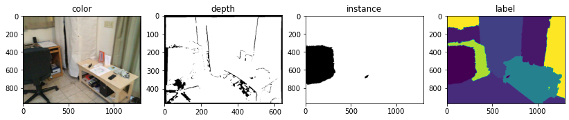
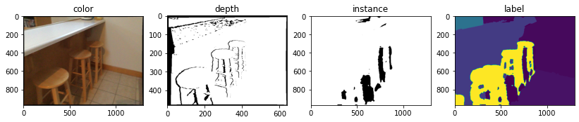

数据集简介与下载方式
数据集分割文件
Reference 1
Reference 2
ScanNet 原始数据集
1
2
3
4
5
6
7
8
9
10
11
12
13
14
15
16
17
18
19
20
21
22
23
24
25
26
27
28
29
30
31
32
33
34
35
36
37
38
39
40
41
42
43
44
45
46
47
48
49
50
51
52
53
54
55
56
| <scanId>
|-- <scanId>.sens
RGB-D sensor stream containing color frames, depth frames, camera poses and other data
压缩二进制格式，包含每帧的颜色·深度·相机姿势和其他数据。RGB图像大小1296*968，深度图像大小640*480
|-- <scanId>_vh_clean.ply
High quality reconstructed mesh
.ply文件是一种三维mesh模型数据格式，全名为多边形档案（Polygon File Format)或斯坦福三角形档案(Stanford Triangle Format)。
点云图像的ply文件，可以直接用meshlab打开，也可以用open3d绘制。
|-- <scanId>_vh_clean_2.ply
Cleaned and decimated mesh for semantic annotations
与<scanId>_vh_clean.ply清晰度不同
|-- <scanId>_vh_clean_2.0.010000.segs.json
Over-segmentation of annotation mesh
|-- <scanId>.aggregation.json, <scanId>_vh_clean.aggregation.json
Aggregated instance-level semantic annotations on lo-res, hi-res meshes, respectively
曲面网格分割文件（.segs.json）：记录了场景中物体分割的详细信息
aggregation.json里格式为：
"SegGroups": // 总数就是场景中的实例个数。
{
"id": 0
"objectId": // 如果label相同，但objectId不同，说明是同一种类的不同物体
"segments":
"label":
},{
"id": 1
"objectId":
"segments":
"label":
}
|-- <scanId>_vh_clean_2.0.010000.segs.json, <scanId>_vh_clean.segs.json
Over-segmentation of lo-res, hi-res meshes, respectively (referenced by aggregated semantic annotations)
表示每个点的seg标签，即所有的点的segIndices是什么。根据标签和aggregation.json中的数据，可以给不同的实例/类别打上标签
|-- <scanId>_vh_clean_2.labels.ply
Visualization of aggregated semantic segmentation; colored by nyu40 labels (see img/legend; ply property 'label' denotes the nyu40 label id)
|-- <scanId>_2d-label.zip
Raw 2d projections of aggregated annotation labels as 16-bit pngs with ScanNet label ids
原始16位png标签标注信息，图像大小为1296×968，带有ScanNet的标签id
|-- <scanId>_2d-instance.zip
Raw 2d projections of aggregated annotation instances as 8-bit pngs
原始16位png实例标注信息，图像大小为1296×968
|-- <scanId>_2d-label-filt.zip
Filtered 2d projections of aggregated annotation labels as 16-bit pngs with ScanNet label ids
经过滤波的8位png标签标注信息，图像大小为1296×968，带有ScanNet的标签id
|-- <scanId>_2d-instance-filt.zip
Filtered 2d projections of aggregated annotation instances as 8-bit pngs
经过滤波的8位png实例标注信息，图像大小为1296×968
|
scannet_frames_25k.zip
由于原始ScanNet数据量特别大，作者提供了较小子集的选项scannet_frames_25k.zip以及基准评估scannet_frames_test。
1
2
3
4
5
6
7
8
9
10
11
12
13
14
15
16
17
18
19
20
21
22
23
24
25
26
27
28
29
| python download-scannet.py -o SAVE_DIR --preprocessed_frames
--------------------------------------------------------------
<scanId>
|-- color
|-- 000000.jpg
|-- ...
|-- 005500.jpg
|-- depth
|-- 000000.png
|-- ...
|-- 005500.png
|-- instance
|-- 000000.png
|-- ...
|-- 005500.png
|-- intrinsics_color.txt //相机内参
|-- intrinsics_depth.txt //相机内参
|-- label
|-- 000000.png
|-- ...
|-- 005500.png
|-- pose
|-- 000000.txt
|-- ...
|-- 005500.txt
|


TBD